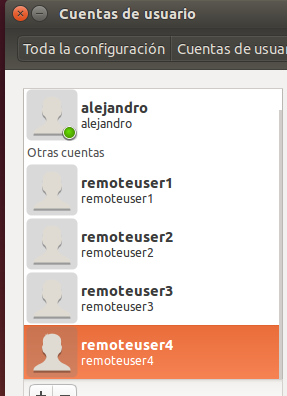
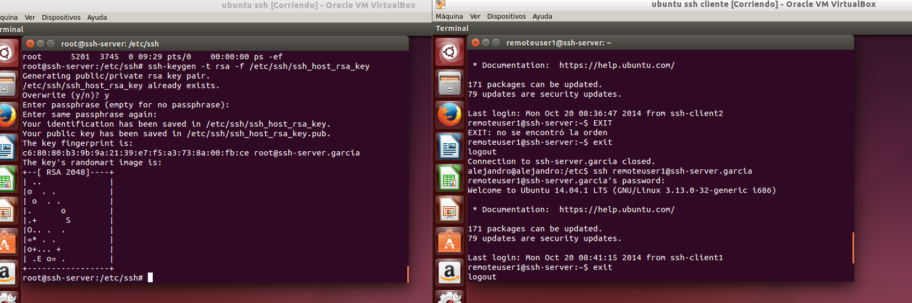
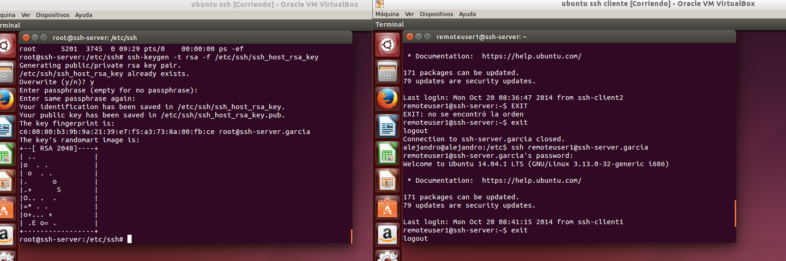

- Módulo: Administración de Sistemas Operativos
- Título del trabajo
- Componentes del grupo: Alejandro Garcia Yumar
- Curso Académico: 2013/2014
- Fecha de entrega: 10 de Octubre de 2014
El ejercicio consiste en instalar correctamente los programas de ssh, que sirve para poder hacer acceso remoto entre distintos tipos de ordenadores.
Se muestran las capturas de los usuarios y de una coneccion entre las maquinas.


 
